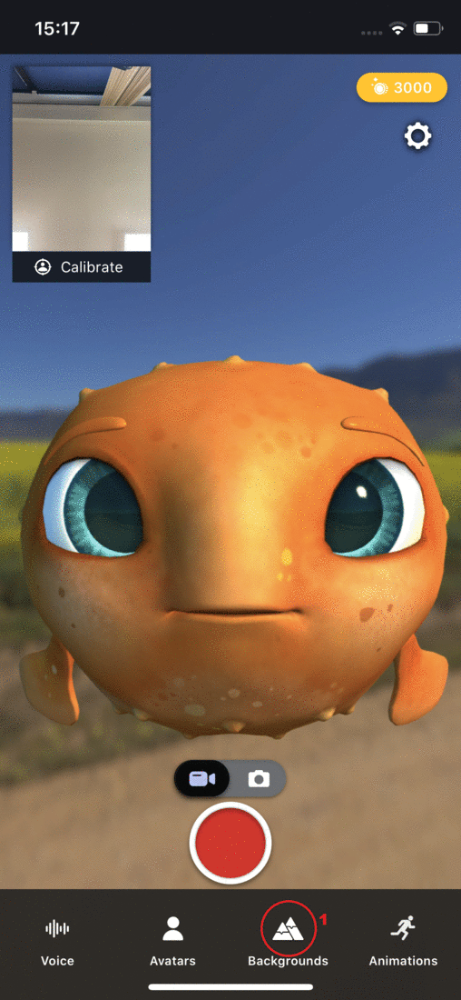

Animaze iPhone: How do I change backgrounds?

1. To choose different backgrounds, tap on the Backgrounds icon  .
.
2. The Background selection menu will appear.
3. Tap on the background thumbnail to preview a new background.
4. Tap on the green checkmark  to load the new background.
to load the new background.